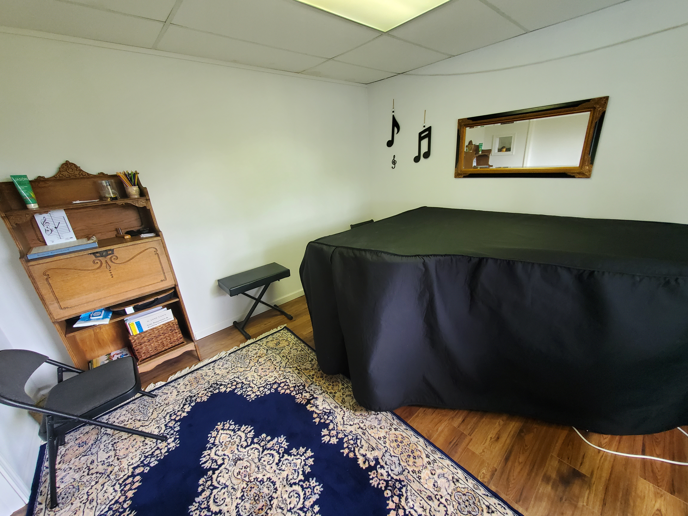

Piano & Keyboard
Build note reading, rhythm, chord fluency, healthy technique, and confidence moving across the instrument.
Piano, guitar, bass, drums, woodwinds, violin, voice, composition, and songwriting lessons for curious beginners, returning players, and growing performers.
A quick sample: real playing, real sound, and the kind of musical attention students get in lessons.
Think old-school arcade electricity, hymnbook harmony, and a practice room where curiosity gets to make a little noise.
Build note reading, rhythm, chord fluency, healthy technique, and confidence moving across the instrument.
Learn songs, grooves, fretboard patterns, ensemble skills, and practical musicianship that transfers to real playing.
Study tone, pitch, reading, phrasing, and repertoire for clarinet, flute, bass clarinet, violin, and voice.
Aaron brings experience from orchestras, choirs, youth chorus accompanying, and church piano work into the lesson room. He has played clarinet and trombone with Evergreen Community Orchestra, sang for six years with the Everett Chorale, accompanied the Snohomish County Youth Chorus (SCYC), and has played piano for St. Aidan's Episcopal Church on Camano Island since 2021 and La Conner United Methodist Church since 2022.
Students learn written music alongside improvisation, listening, performance, and analysis. The goal is not just to get through a song, but to understand how music works and how to keep growing independently.
Each lesson is shaped around the student's age, instrument, experience, and musical taste, with enough structure to make progress feel steady.

Recent posts, recordings, announcements, and studio notes from Aaron.
A rotating note from music history, connecting ancient instruments, great composers, and modern sound in a way curious students can actually use.
Share the instrument, experience level, age range, musical interests, and any scheduling notes. We will follow up with next steps.